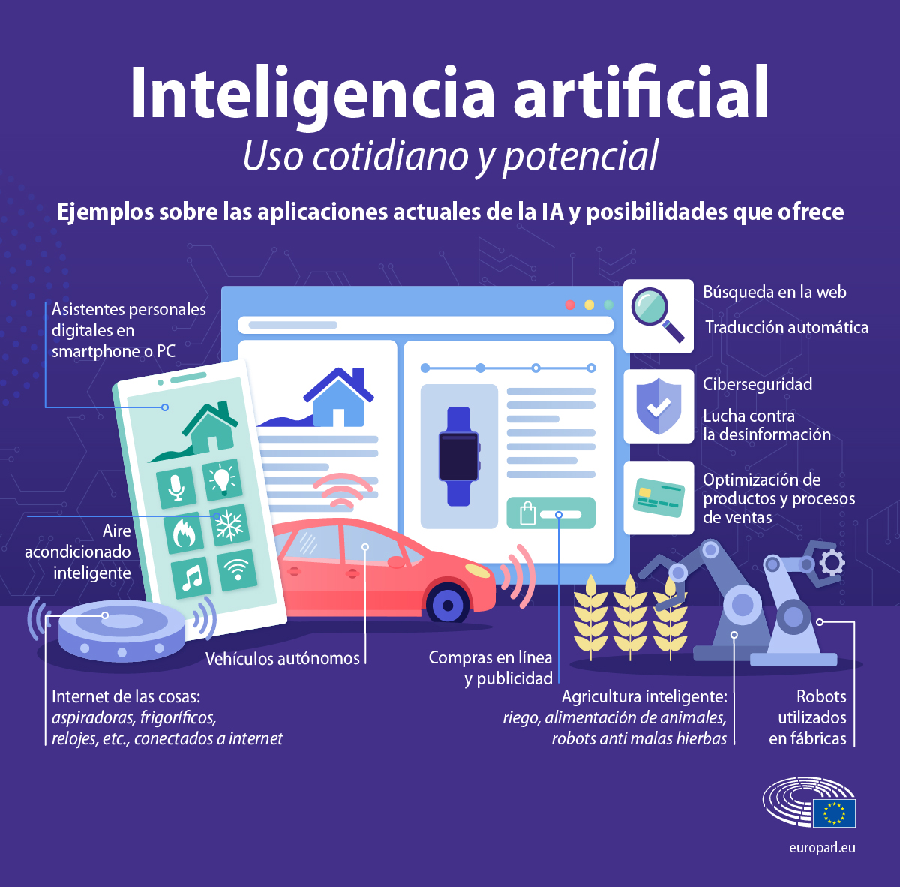

Definicion:
La inteligencia artificial, o IA, es tecnología que permite que las computadoras simulen la inteligencia humana y las capacidades humanas de resolución de problemas.
la IA puede realizar tareas que de otro modo requerirían inteligencia o intervención humana. Los asistentes digitales, la guía por GPS, los vehículos autónomos y las herramientas de inteligencia artificial generativa (como Chat GPT de Open AI) son solo algunos ejemplos de inteligencia artificial en las noticias diarias y en nuestra vida cotidiana.
Reconocimiento de voz: También conocido como reconocimiento automático de voz (ASR), reconocimiento de voz por computadora o conversión de voz a texto, el reconocimiento de voz utiliza PLN para procesar el habla humana en un formato escrito.
Atención al cliente: Los agentes virtuales en línea y los chatbots están reemplazando a los agentes humanos a lo largo del recorrido del cliente. Responden preguntas frecuentes (FAQ) sobre temas como el envío, o brindan asesoramiento personalizado, venta cruzada de productos o sugerencias de tamaños para los usuarios, cambiando la forma en que pensamos sobre la participación del cliente en sitios web y plataformas de redes sociales.
Visión artificial: Esta tecnología de IA permite que las computadoras y los sistemas deriven información significativa a partir de imágenes digitales, videos y otras entradas visuales, y con base en esas entradas, pueden tomar medidas
Pronóstico meteorológico: Los modelos meteorológicos en los que confían las emisoras para hacer pronósticos precisos consisten en algoritmos complejos que se ejecutan en supercomputadoras. Las técnicas de aprendizaje automático mejoran estos modelos haciéndolos más aplicables y precisos